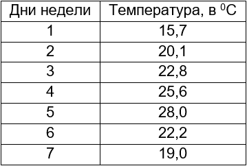
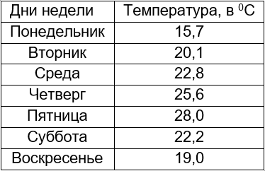

Как построить график в Microsoft Excel
Плоский график подразумевает две оси – вертикальную и горизонтальную. Они могут быть подписаны совершенно произвольно, но всегда смысл один – каждой точке на горизонтальной оси соответствует значение по вертикали. Или как привыкли из школы: каждому иксу – свой игрек. А вот это соответствие может сразу задаваться некой уже имеющейся таблицей или даётся формулой.
| Как построить простой график ↓ | Как сложный график ↓ | |
Простой график
Самая простая таблица – из двух столбцов.

{kind=link}
Уже с ней могут возникнуть проблемы. Например, выделяем эту таблицу в excel, нажимаем на Вставка в верней строке и попадаем в:
{kind=link}
Нажимаем на График (что под Данные), открывается оконце:
{kind=link}
Нажимаем на первый (верхний слева) и получаем график:
{kind=link}
Разве это мы хотели? Думали, что дни недели образуют нижнюю ось, а они выстроились второй линией на графике. Как быть?
Вариант 1 – поменять цифры на названия:

{kind=link}
Выделяем эту табличку в excel и повторяем действия по рисованию графика, получаем:
{kind=link}
Дни недели расположились на горизонтальной оси, как и хотелось. Как же вернуть на горизонталь дни недели в цифрах? Очень просто – выделять в excel только столбец с Температурой, тогда получится:

Это важно: если первый столбец цифровой и есть желание расположить его на горизонтальной оси, не надо выделять его при рисовании графика.
Из приведённого примера уже понятно, что если в таблице будет больше двух столбцов, то это приведёт просто к дополнительным линиям на графике. Например:
{kind=link}
{kind=link}
Видно неудобство: на одной вертикальной оси отражены и шкала температуры, и шкала влажности. Проблема решается вводом дополнительной вертикальной оси справа. Пусть справа будет шкала по влажности. Тогда наводим курсор на красную кривую влажности и кликаем по ней. Наверху страницы активировалось окно Работа с диаграммами:
{kind=link}
В окне активированы Конструктор, Макет и Формат. Нажимаем на Формат:
{kind=link}
И в левом столбце нажимаем на фрагмент выделенного. Открывается окно Формат ряда данных:
{kind=link}
В правом столбце осталось поставить крыжик в строке По вспомогательной оси. И нажать на Закрыть. Появляется ось справа:
{kind=link}
Осталось улучшить оформление: подписать оси, сделать заголовок.
Оформление простого графика
Кликая левой кнопкой по графику (в excel), активируем сверху блок Работа с диаграммами. В нём – Макет, открывается:
{kind=link}
Входя в Названия осей, по очереди даём названия горизонтальной оси и двум вертикальным. При этом правой кнопкой можно менять размер шрифта, цвет. Также выбираем написание вертикальных осей – горизонтальное или вертикальное.
{kind=link}
Входя в Название диаграммы, пишем название графика, также правой мышкой выбирая размер, цвет, выравнивание.
Можно также задать сеть (нажимая Сетка) и заливку (правой мышкой):
{kind=link}
Построение графика функции
Для начала – график простой функции, например, квадратной y=x2. Поскольку построение графика по таблице не вызывает уже проблем, то и надо этим воспользоваться, создать таблицу. В excel это очень просто:
{kind=link}
В столбце Y напротив -5 ставится = и нажимается значок функции fx. В появившемся окне Мастер функций выбирается категория Математические и находится (по алфавиту) СТЕПЕНЬ. Курсор на неё и нажать ОК. В появившемся окне Аргументы функции вставить курсор в строку Число, а потом в таблице выделить значения Х. В строке Число введётся диапазон. В строке окошка Степень поставить 2, раз функция квадратичная. В столбце Y таблицы напротив -5 появится цифра 25. Курсор в нижний правый угол ячейки с 25 и протащить вниз до конца таблицы. В каждой ячейке появится цифра.
Далее – по отработанной схеме: выделяем столбец Y, потом – Вставка-График-первый из появившегося окна. Получаем:
{kind=link}
Кривая построена по точкам, её надо сгладить. Для этого наводим курсор на график, правой кнопкой выбираем Изменить тип диаграммы, переходим на Точечную диаграмму, а в ней на ту, что без точек и жмём ОК. Получается:
{kind=link}
Но это ещё не график функции y=x2, (при х=0, у=6). Для корректировки горизонтальной оси наводим курсор на эту ось, правой кнопкой нажимаем на Выбрать данные и в левом столбце появившегося окошка жмём Изменить. Появляется окошко Изменение ряда. В нём в строку Х вносим столбец Х из нашей таблицы (только значения), два раза – ОК и получаем:
{kind=link}
После нескольких завершающих штрихов:
{kind=link}
Несколько общих советов:
• когда график нарисован, то с помощью правой кнопки можно выбрать нужный шрифт, его размеры – для всех названий;
• все названия можно перетаскивать по графику в нужное место;
• можно также в разных стилях размещать подписи, используя Метки данных из окошка Элементы диаграммы;
• можно поиграть с видами графиков из вкладки Конструктор, выбирая шаблоны в Стилях диаграмм.
График сложной функции
Как в excel построить график любой сложной функции?
Зная, как построить график простой функции, то есть функции из Математических функций Мастера функций, можно легко построить любую сложную функцию – из произвольного сочетания тригонометрических, степенных, показательных, логарифмических функций, просто надо искомую функцию представить как сумму (алгебраическую) функций: Y = y1 + y2 +y3 +… И таблицу делать из аргументов и этих функций. Далее – всё, как было описано для графика простой функции.
Например, Y=100logx — х3 = y1 -y2
{kind=link}
Возможности Excel гораздо шире описанных в статье, и знакомство с ними расцветит красками оформление графиков, их подачу. Но основной подход построения – через составление (или изначальное наличие) предварительной таблицы – описан и позволит любому пользователю построить график любой зависимости.
Спасибо! Оказывается всё легко